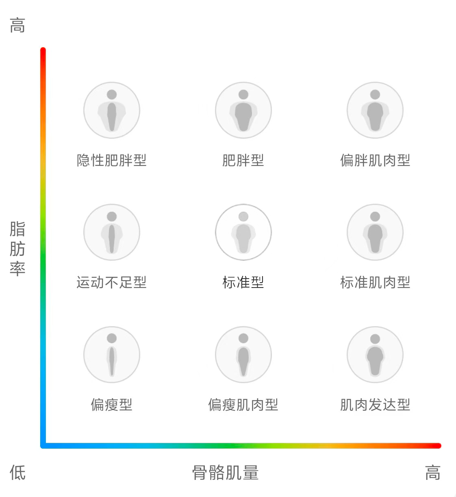

2026 减肥记录
男，25 岁
—kg
变化趋势
时间范围
观察尺度
纵轴指标
第一项使用左轴，第二项可为无关于指标
只有体重是可信度高的，脂肪率的同条件长期走向勉强能说明体脂变化趋势，其他指标都是图一乐。
点击此处可以查看体脂秤配套 App 对各指标的说明和为我制定的评判标准。
脂肪率（%）
脂肪是由大量脂肪细胞聚集而成的一种结缔组织，具有促进脂溶性维生素吸收、保护内脏器官、调节体温、供给人体热量等作用。脂肪率反映身体总体的肥胖程度，是评价肥胖的客观标准。脂肪率过低或过高，都会影响健康。
骨骼肌量（kg）
骨骼肌附着在骨骼上，肌肉体积与重量，直接决定了人体的运动能力，并与能量代谢息息相关。为维护骨骼肌，应维持均衡饮食，保证每天蛋白质摄入量充足。有氧运动和力量训练交叉进行，每周 3~4 次有氧运动，每次 30 分钟左右；2~3 次力量训练。
内脏脂肪等级
内脏脂肪是指腹腔内内脏缝隙间所附带的脂肪。过高内脏脂肪造成腹部“游泳圈”，增加心血管疾病风险：过低内脏脂肪不利于内脏器官的支撑、稳定和保护。
身体类型
根据脂肪率、骨骼肌量等指标，将人体分为九种体型（偏胖肌肉型、肥胖型、隐性肥胖型、标准肌肉型、标准型、运动不足型、肌肉发达型、偏瘦肌肉型、偏瘦型）。体型名称能够大致描述身体“外型”。

基础代谢率（kcal/d）
基础代谢率是指人体在清醒而且安静状态下，不受肌肉活动、环境温度、食物及精神紧张等影响时的能量代谢率。在一定范围，基础代谢率越高代表生命活动越活跃，通常男性高于女性、青年人高于老人。
水分率（%）
水分率指人体成分中水分占体重的百分比。身体水分有着输送营养成分、回收体内废物、保持体温等重要功能。应保证每天至少 1500 毫升的饮水量（白开水、淡茶、花草茶等），以维持细胞正常渗透压和体内酸碱平衡。
骨盐量（kg）
骨盐量是指骨中无机盐的含量。骨由无机盐、有机质和骨细胞组成。骨盐量与骨质疏松有显著相关性。多食用新鲜蔬果、适量晒太阳有助于钙质吸收。
蛋白质（%）
人体含蛋白质的质量。蛋白质是组成人体一切细胞、组织的重要成分。应保持均衡膳食，荤素搭配。
去脂体重（kg）
去脂体重是体重减去身体总脂肪重量后的值，表征和体内非脂肪物质的总重量。适量去脂体重对维持人体正常新陈代谢和骨关节健康具有重要意义。
身体年龄
身体年龄是根据脂肪、骨骼肌等指标综合评价身体总体健康水平在人群中的位置。身体年龄越接近青年则表征健康状况越好。